MySql入门教程,Sql语句复习
环境
- centos7
- virtualbox
- MySQL 5.7
SQL语言分类
- DQL(数据查询语言)
数据查询语言DQL基本结构是由SELECT子句，FROM子句，WHERE - DML(数据操纵语言)
数据操纵语言DML主要有三种形式：插入：INSERT，更新：UPDATE，删除：DELETE - DDL(数据定义语言)
数据定义语言DDL用来创建数据库中的各种对象—–表、视图、索引、同义词、聚簇等 - DCL(数据控制语言)
数据控制语言DCL用来授予或回收访问数据库的某种特权，并控制数据库操纵事务发生的时间及效果，对数据库实行监视
Centos下Mysq显示方式设置
使用more
1
mysql> pager more
使用less
1
mysql> pager less
less模式下按下键盘q退出
还原
1
mysql> nopager
使用\G按行垂直显示结果
如果一行很长，需要这行显示的话，看起结果来就非常的难受。在SQL语句或者命令后使用\G而不是分号结尾，可以将每一行的值垂直输出。这个可能也是大家对于MySQL最熟悉的区别于其他数据库工具的一个特性了。1
2
3
4mysql> use mysql;
Database changed
mysql> select * from user\G
MySQL用户设置
如果你需要添加 MySQL 用户，你只需要在 mysql 数据库中的 user 表添加新用户即可。
以下为添加用户的的实例，用户名为guest，密码为guest123，并授权用户可进行 SELECT, INSERT 和 UPDATE操作权限：1
2
3
4
5
6
7
8
9
10
11
12
13
14
15
16
17
18
19
20mysql> use mysql;
Database changed
mysql> INSERT INTO user
(host, user, password,
select_priv, insert_priv, update_priv)
VALUES ('localhost', 'guest',
PASSWORD('guest123'), 'Y', 'Y', 'Y');
Query OK, 1 row affected (0.20 sec)
mysql> FLUSH PRIVILEGES;
Query OK, 1 row affected (0.01 sec)
mysql> SELECT host, user, password FROM user WHERE user = 'guest';
+-----------+---------+------------------+
| host | user | password |
+-----------+---------+------------------+
| localhost | guest | 6f8c114b58f2ce9e |
+-----------+---------+------------------+
1 row in set (0.00 sec)
注意：在 MySQL5.7 中 user 表的 password 已换成了authentication_string。
error
这种方式出现过mysql插入用户的时候，突然出现了 Field ‘ssl_cipher’ doesn’t have a default value 的错误，现已解决，步骤如下：
在mysql的user表中增加连接用户帐号：
这里不要直接使用INSERT语句添加user记录，使用INSERT可能出现：
ERROR 1364 (HY000): Field ‘ssl_cipher’ doesn’t have a default value错误。
你可以在创建用户时，为用户指定权限，在对应的权限列中，在插入语句中设置为 ‘Y’ 即可，用户权限列表如下：
- Select_priv
- Insert_priv
- Update_priv
- Delete_priv
- Create_priv
- Drop_priv
- Reload_priv
- Shutdown_priv
- Process_priv
- File_priv
- Grant_priv
- References_priv
- Index_priv
- Alter_priv
另外一种添加用户的方法为通过SQL的 GRANT 命令，以下命令会添加用户 zara ，密码为 zara123 。1
2
3mysql>GRANT SELECT ON *.* TO 'zara'@'localhost' IDENTIFIED BY 'zara123'
->WITH GRANT OPTION;
Query OK
为数据库TUTORIALS添加用户 zara ，密码为 zara1231
2
3
4mysql> GRANT SELECT,INSERT,UPDATE,DELETE,CREATE,DROP
-> ON TUTORIALS.*
-> TO 'zara'@'localhost'
-> IDENTIFIED BY 'zara123';
管理数据库命令
USE (dbname);
选择要操作的数据库，之后所执行的mysql命令都是针对该数据库1
mysql> use mysql;
SHOW DATABASES;
列出Mysql数据库管理系统的数据库列表1
mysql> SHOW DATABASES;
SHOW TABLES;
显示指定数据库的所有表，使用该命令前需要使用 use 命令来选择要操作的数据库。1
mysql> SHOW TABLES;
SHOW COLUMNS FROM (tablename):
显示数据表的属性，属性类型，主键信息 ，是否为 NULL，默认值等其他信息。
SHOW INDEX FROM (tablename):
显示数据表的详细索引信息，包括PRIMARY KEY（主键）。1
mysql> SHOW INDEX FROM user;
SHOW TABLE STATUS LIKE [FROM db_name] [LIKE ‘pattern’] \G:
该命令将输出Mysql数据库管理系统的性能及统计信息。
1 | mysql> SHOW TABLE STATUS FROM mysql; |
创建数据库
登陆 MySQL 服务后，使用 create 命令创建数据库，语法如下:1
CREATE DATABASE booklib;
删除数据库
如果使用普通用户可能需要权限来进行删除数据库，登陆root账户，拥有最高权限，删除数据库需要谨慎，一旦删除，数据将会消失。语法如下1
DROP DATABASE (dbname);
MySQL数据类型
- 数字类型
- 整数: tinyint、smallint、mediumint、int、bigint
- 浮点数: float、double、real、decimal
- 日期和时间: date、time、datetime、timestamp、year
- 字符串类型
- 字符串: char、varchar
- 文本: tinytext、text、mediumtext、longtext
- 二进制(可用来存储图片、音乐等): tinyblob、blob、mediumblob、longblob
字符串类型
| 类型 | 单位 | 最大 | 特性 |
|---|---|---|---|
| CHAR | 字符 | 最大为255字符 | 存储定长，容易造成空间的浪费 |
| VARCHAR | 字符 | 可以超过255个字符 | 存储变长，节省存储空间 |
| TEXT | 字节 | 总大小为65535字节，约为64KB | - |
- TEXT在MySQL内部大多存储格式为溢出页，效率不如CHAR
- Mysql默认为utf-8，那么在英文模式下1个字符=1个字节，在中文模式下1个字符=3个字节。
数字类型
整形
| type | Storage | Minumun Value | Maximum Value |
|---|---|---|---|
| (Bytes) | (Signed/Unsigned) | (Signed/Unsigned) | |
| TINYINT | 1 | -128 | 127 |
| 0 | 255 | ||
| SMALLINT | 2 | -32768 | 32767 |
| 0 | 65535 | ||
| MEDIUMINT | 3 | -8388608 | 8388607 |
| 0 | 16777215 | ||
| INT | 4 | -2147483648 | 2147483647 |
| 0 | 4294967295 | ||
| BIGINT | 8 | -9223372036854775808 | 9223372036854775807 |
| 0 | 18446744073709551615 |
浮点型
| 属性 | 存储空间 | 精度 | 精确性 | 说明 |
|---|---|---|---|---|
| FLOAT(M, D) | 4 bytes | 单精度 | 非精确 | 单精度浮点型，m总个数，d小数位 |
| DOUBLE(M, D) | 8 bytes | 双精度 | 比Float精度高 | 双精度浮点型，m总个数，d小数位 |
- FLOAT容易造成精度丢失
定点数DECIMAL
- 高精度的数据类型，常用来存储交易相关的数据
- DECIMAL(M,N).M代表总精度，N代表小数点右侧的位数（标度）
- 1 < M < 254, 0 < N < 60;
- 存储空间变长
时间类型
| 类型 | 字节 | 例 | 精确性 |
|---|---|---|---|
| DATE | 三字节 | 2015-05-01 | 精确到年月日 |
| TIME | 三字节 | 11:12:00 | 精确到时分秒 |
| DATETIME | 八字节 | 2015-05-01 11::12:00 | 精确到年月日时分秒 |
| TIMESTAMP | 2015-05-01 11::12:00 | 精确到年月日时分秒 |
- MySQL在
5.6.4版本之后，TIMESTAMP和DATETIME支持到微秒。 TIMESTAMP会根据系统时区进行转换，DATETIME则不会- 存储范围的区别
TIMESTAMP存储范围：1970-01-01 00::00:01 to 2038-01-19 03:14:07DATETIME的存储范围：1000-01-01 00:00:00 to 9999-12-31 23:59:59
- 一般使用
TIMESTAMP国际化 - 如存时间戳使用数字类型
BIGINT
创建数据表
创建MYSQL数据以下信息
- 表名
- 表字段名
- 定义表每个字段
语法1
CREATE TABLE (tablename) (column name column type, ...)
例子：创建一个书本表，书本有编号,名字，出版社，作者名称，价格，出版日期1
2
3
4
5
6
7
8mysql> CREATE TABLE IF NOT EXISTS book(
> book_id INT UNSIGNED AUTO_INCREMENT,
> book_name VARCHAR(50) NOT NULL,
> author VARCHAR(10) NOT NULL,
> pub VARCHAR(100),
> pub_date DATE,
> PRIMARY KEY (book_id)
> ) ENGINE=InnoDB DEFAULT CHARSET=utf8;
解析：
- 如果不想字段为NULL，可以设置字段为NOT NULL，但是一旦字段该数值为null，则会报错。
- AUTO_INCREMENT定义列为自增的属性，一般用于主键，数值会自动加1。
- PRIMARY KEY关键字用于定义列为主键。 您可以使用多列来定义主键，列间以逗号分隔。
- ENGINE 设置存储引擎，CHARSET 设置编码。
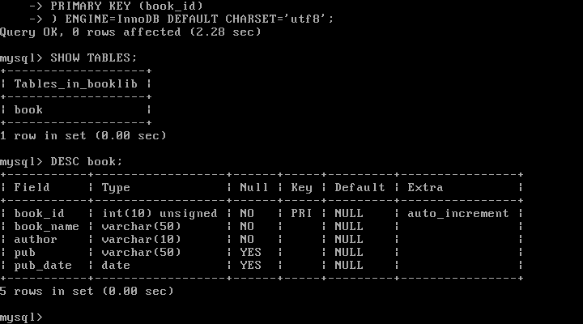
删除数据表
MySQL删除数据表，语法1
DROP TABLE (tablename);
示例:1
mysql> DROP TABLE book;
插入数据
使用 INSERT INTO 语句来插入数据,语法1
2
3INSERT INTO table_name ( field1, field2,...fieldN )
VALUES
( value1, value2,...valueN );
如果数据是字符型，必须使用单引号或者双引号，如：”value”。
示例:1
2mysql> INSERT INTO book(book_name, author, pub, pub_date)
-> VALUES('Android Coder', 'bitch', 'english', NOW())
一次插入多行语句1
2
3
4mysql> INSERT INTO book(book_name, author, pub, pub_date)
-> VALUES
-> ('python', 'pp', 'english', DATE('2010-08-10')),
-> ('kotlin', 'kk', 'amearica', DATE('2013-07-10'));
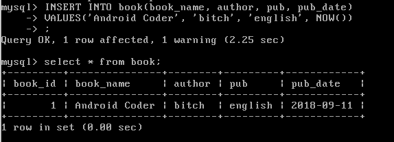
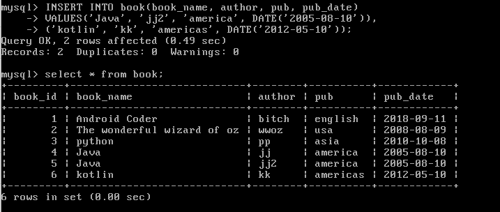
查询数据
使用SQL SELECT 查询数据,语法1
2
3
4SELECT column_name,column_name
FROM table_name
[WHERE Clause]
[LIMIT N][ OFFSET M]
- 查询语句中你可以使用一个或者多个表，表之间使用逗号(,)分割，并使用WHERE语句来设定查询条件。
- SELECT 命令可以读取一条或者多条记录。
- 你可以使用星号（*）来代替其他字段，SELECT语句会返回表的所有字段数据
- 你可以使用 WHERE 语句来包含任何条件。
- 你可以使用 LIMIT 属性来设定返回的记录数。
- 你可以通过OFFSET指定SELECT语句开始查询的数据偏移量。默认情况下偏移量为0。
1 | mysql> SELECT * FROM book; |
WHERE 字句
我们知道从 MySQL 表中使用 SQL SELECT 语句来读取数据。
如需有条件地从表中选取数据，可将 WHERE 子句添加到 SELECT 语句中。
语法1
2SELECT field1, field2,...fieldN FROM table_name1, table_name2...
[WHERE condition1 [AND [OR]] condition2.....
- 查询语句中你可以使用一个或者多个表，表之间使用逗号,
- 分割，并使用WHERE语句来设定查询条件。
- 你可以在 WHERE 子句中指定任何条件。
- 你可以使用 AND 或者 OR 指定一个或多个条件。
- WHERE 子句也可以运用于 SQL 的 DELETE 或者 UPDATE 命令。
- WHERE 子句类似于程序语言中的 if 条件，根据 MySQL 表中的字段值来读取指定的数据。
| 操作符 | 描述 | 实例 |
|---|---|---|
| = | 等号，检测两边值是否相等，相等返回true | A = B 返回true |
| <>, != | 不等于，检测两边值是否相等，相等返回false | A != B 返回false |
| > | 大于，检测左边值是否大于右边值，大于则返回true | A > B 返回true |
| < | 小于，检测左边值是否小于右边值，小于则返回true | A < B 返回true |
| >= | 大于等于，检测左边值是否大于等于右边值，同上 | A >= B 返回true |
| <= | 大于等于，检测左边值是否大于等于右边值，同上 | A <= B 返回true |
如果我们想在 MySQL 数据表中读取指定的数据，WHERE 子句是非常有用的。
使用主键来作为 WHERE 子句的条件查询是非常快速的。
如果给定的条件在表中没有任何匹配的记录，那么查询不会返回任何数据。
1 | mysql> SELECT * FROM book WHERE author='bitch' |
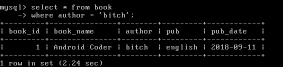
UPDATE 查询
使用SQL UPDATE语句修改或更新数据库中数据
语法1
2UPDATE table_name SET field1=new-value1, field2=new-value2
[WHERE Clause]
- 你可以同时更新一个或多个字段。
- 你可以在 WHERE 子句中指定任何条件。
- 你可以在一个单独表中同时更新数据。
1 | mysql> UPDATE book SET author = 'jack' WHERE book_id = 4; |
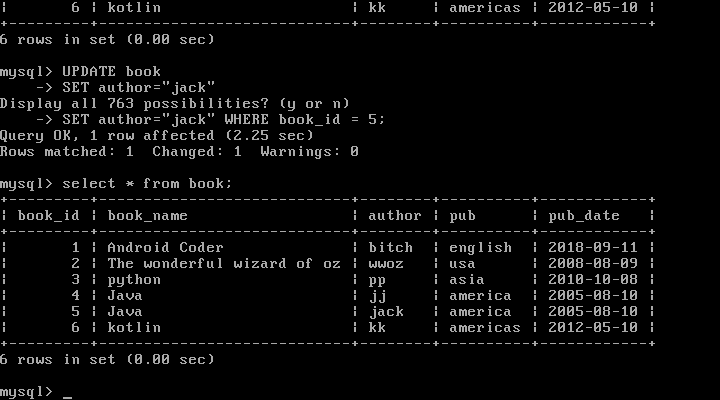
DELETE 删除
SQL 的 DELETE FROM 命令来删除 MySQL 数据表中的记录。
语法1
DELETE FROM table_name [WHERE Clause]
- 如果没有指定 WHERE 子句，MySQL 表中的所有记录将被删除。
- 你可以在 WHERE 子句中指定任何条件
- 您可以在单个表中一次性删除记录。
请谨慎
1 | mysql> DELETE FROM book WHERE book_name = 'TEST'; |
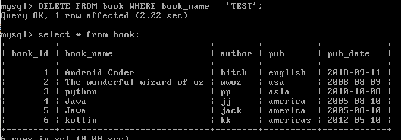
LIKE 子句
MySQL 中使用 SQL SELECT 命令来读取数据， 同时我们可以在 SELECT 语句中使用 WHERE 子句来获取指定的记录。
WHERE 子句中可以使用等号 = 来设定获取数据的条件，如 “runoob_author = ‘RUNOOB.COM’”。
但是有时候我们需要获取 runoob_author 字段含有 “COM” 字符的所有记录，这时我们就需要在 WHERE 子句中使用 SQL LIKE 子句。
SQL LIKE 子句中使用百分号 %字符来表示任意字符，类似于UNIX或正则表达式中的星号 *。
如果没有使用百分号 %, LIKE 子句与等号 = 的效果是一样的。
语法1
2
3SELECT field1, field2,...fieldN
FROM table_name
WHERE field1 LIKE condition1 [AND [OR]] filed2 = 'somevalue'
- 你可以在 WHERE 子句中指定任何条件。
- 你可以在 WHERE 子句中使用LIKE子句。
- 你可以使用LIKE子句代替等号 =。
- LIKE 通常与 % 一同使用，类似于一个元字符的搜索。
- 你可以使用 AND 或者 OR 指定一个或多个条件。
- 你可以在 DELETE 或 UPDATE 命令中使用 WHERE…LIKE 子句来指定条件。
like 匹配/模糊匹配，会与 % 和 _ 结合使用。
‘%a’ //以a结尾的数据
‘a%’ //以a开头的数据
‘%a%’ //含有a的数据
‘_a_’ //三位且中间字母是a的
‘a’ //两位且结尾字母是a的
‘a‘ //两位且开头字母是a的
1 | mysql> SELECT * FROM book WHERE pub LIKE 'a%'; |
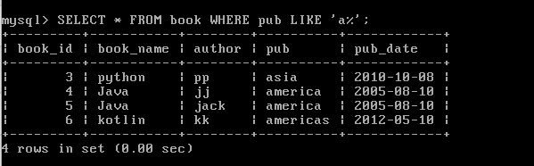
UNION 操作符
MySQL UNION 操作符用于连接两个以上的 SELECT 语句的结果组合到一个结果集合中。多个 SELECT 语句会删除重复的数据。
语法1
2
3
4
5
6
7SELECT expression1, expression2, ... expression_n
FROM tables
[WHERE conditions]
UNION [ALL | DISTINCT]
SELECT expression1, expression2, ... expression_n
FROM tables
[WHERE conditions];
- expression1, expression2, … expression_n: 要检索的列。
- tables: 要检索的数据表。
- WHERE conditions: 可选， 检索条件。
- DISTINCT: 可选，删除结果集中重复的数据。默认情况下 UNION 操作符已经删除了重复数据，所以 DISTINCT 修饰符对结果没啥影响。
- ALL: 可选，返回所有结果集，包含重复数据。
排序
读取的数据进行排序，我们就可以使用 MySQL 的 ORDER BY 子句来设定你想按哪个字段哪种方式来进行排序，再返回搜索结果。
语法1
2SELECT field1, field2,...fieldN table_name1, table_name2...
ORDER BY field1, [field2...] [ASC [DESC]]
- 你可以使用任何字段来作为排序的条件，从而返回排序后的查询结果。
- 你可以设定多个字段来排序。
- 你可以使用 ASC 或 DESC 关键字来设置查询结果是按升序或降序排列。
- 默认情况下，它是按升序排列。
- 你可以添加 WHERE…LIKE 子句来设置条件。
1 | mysql> SELECT * FROM book ORDER BY pub_date ASC; |
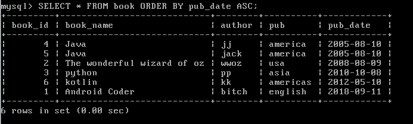
分组
GROUP BY 语句根据一个或多个列对结果集进行分组。
在分组的列上我们可以使用 COUNT, SUM, AVG,等函数。
语法1
2
3
4SELECT column_name, function(column_name)
FROM table_name
WHERE column_name operator value
GROUP BY column_name;
1 | mysql> SELECT COUNT(*), book_name FROM book GROUP BY book_name; |
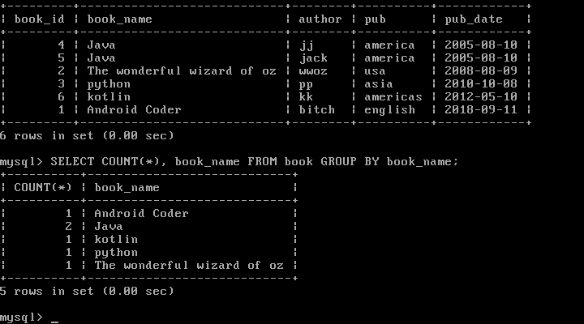
注意
- group by 语句用法有一个注意点，在 select 语句中，所查询的字段除了聚合函数（SUM ,AVG,COUNT…)以外 必须只能是分组的字段，举例：
1
SELECT book_id,book_name,count(*) FROM book GROUP BY book_name;
以上会报错,纠正1
SELECT book_id,book_name,count(*) FROM book GROUP BY book_id,book_name;
- 分组后的条件使用 HAVING 来限定，WHERE 是对原始数据进行条件限制。几个关键字的使用顺序为 where 、group by 、having、order by
连接
使用 MySQL 的 JOIN 在两个或多个表中查询数据。
你可以在 SELECT, UPDATE 和 DELETE 语句中使用 Mysql 的 JOIN 来联合多表查询。
JOIN 按照功能大致分为如下三类：
- INNER JOIN（内连接,或等值连接）：获取两个表中字段匹配关系的记录。
- LEFT JOIN（左连接）：获取左表所有记录，即使右表没有对应匹配的记录。
- RIGHT JOIN（右连接）： 与 LEFT JOIN 相反，用于获取右表所有记录，即使左表没有对应匹配的记录。
NULL 值处理
我们已经知道 MySQL 使用 SQL SELECT 命令及 WHERE 子句来读取数据表中的数据,但是当提供的查询条件字段为 NULL 时，该命令可能就无法正常工作。
为了处理这种情况，MySQL提供了三大运算符:
- IS NULL: 当列的值是 NULL,此运算符返回 true。
- IS NOT NULL: 当列的值不为 NULL, 运算符返回 true。
- <=>: 比较操作符（不同于=运算符），当比较的的两个值为 NULL 时返回 true。
关于 NULL 的条件比较运算是比较特殊的。你不能使用 = NULL 或 != NULL 在列中查找 NULL 值 。
在 MySQL 中，NULL 值与任何其它值的比较（即使是 NULL）永远返回 false，即 NULL = NULL 返回false 。
MySQL 中处理 NULL 使用 IS NULL 和 IS NOT NULL 运算符。
实例:
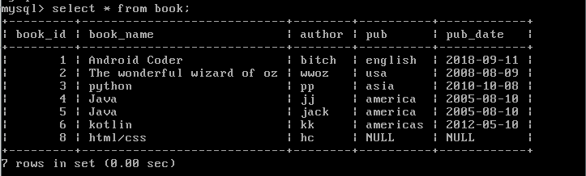
表中有一行有NULL值的数据，如果使用1
mysql> SELECT * FROM book WHERE pub = NULL;
会出现
判断NULL， =和！=是不起作用的1
2mysql> SELECT * FROM book WHERE author IS NULL;
mysql> SELECT * FROM book WHERE author IS NOT NULL;
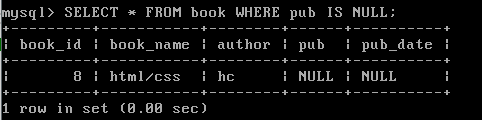
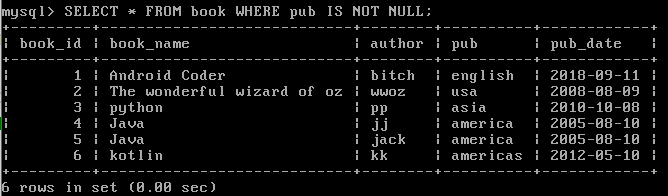
正则表达式
事务
MySQL 事务主要用于处理操作量大，复杂度高的数据。比如说，在人员管理系统中，你删除一个人员，你即需要删除人员的基本资料，也要删除和该人员相关的信息，如信箱，文章等等，这样，这些数据库操作语句就构成一个事务！
- 在 MySQL 中只有使用了 Innodb 数据库引擎的数据库或表才支持事务。
- 事务处理可以用来维护数据库的完整性，保证成批的 SQL 语句要么全部执行，要么全部不执行。
- 事务用来管理 insert,update,delete 语句
一般来说，事务是必须满足4个条件（ACID）：：原子性（Atomicity，或称不可分割性）、一致性（Consistency）、隔离性（Isolation，又称独立性）、持久性（Durability）。
- 原子性：一个事务（transaction）中的所有操作，要么全部完成，要么全部不完成，不会结束在中间某个环节。事务在执行过程中发生错误，会被回滚（Rollback）到事务开始前的状态，就像这个事务从来没有执行过一样。
- 一致性：在事务开始之前和事务结束以后，数据库的完整性没有被破坏。这表示写入的资料必须完全符合所有的预设规则，这包含资料的精确度、串联性以及后续数据库可以自发性地完成预定的工作。
- 隔离性：数据库允许多个并发事务同时对其数据进行读写和修改的能力，隔离性可以防止多个事务并发执行时由于交叉执行而导致数据的不一致。事务隔离分为不同级别，包括读未提交（Read uncommitted）、读提交（read committed）、可重复读（repeatable read）和串行化（Serializable）。
- 持久性：事务处理结束后，对数据的修改就是永久的，即便系统故障也不会丢失。
在 MySQL 命令行的默认设置下，事务都是自动提交的，即执行 SQL 语句后就会马上执行
COMMIT 操作。因此要显式地开启一个事务务须使用命令 BEGIN 或 START
TRANSACTION，或者执行命令 SET AUTOCOMMIT=0，用来禁止使用当前会话的自动提交。
事务控制语句：
- BEGIN或START TRANSACTION；显式地开启一个事务；
- COMMIT；也可以使用COMMIT WORK，不过二者是等价的。COMMIT会提交事务，并使已对数据库进行的所有修改成为永久性的；
- ROLLBACK；有可以使用ROLLBACK WORK，不过二者是等价的。回滚会结束用户的事务，并撤销正在进行的所有未提交的修改；
- SAVEPOINT identifier；SAVEPOINT允许在事务中创建一个保存点，一个事务中可以有多个SAVEPOINT；
- RELEASE SAVEPOINT identifier；删除一个事务的保存点，当没有指定的保存点时，执行该语句会抛出一个异常；
- ROLLBACK TO identifier；把事务回滚到标记点；
- SET TRANSACTION；用来设置事务的隔离级别。InnoDB存储引擎提供事务的隔离级别有READ UNCOMMITTED、READ COMMITTED、REPEATABLE READ和SERIALIZABLE。
案例
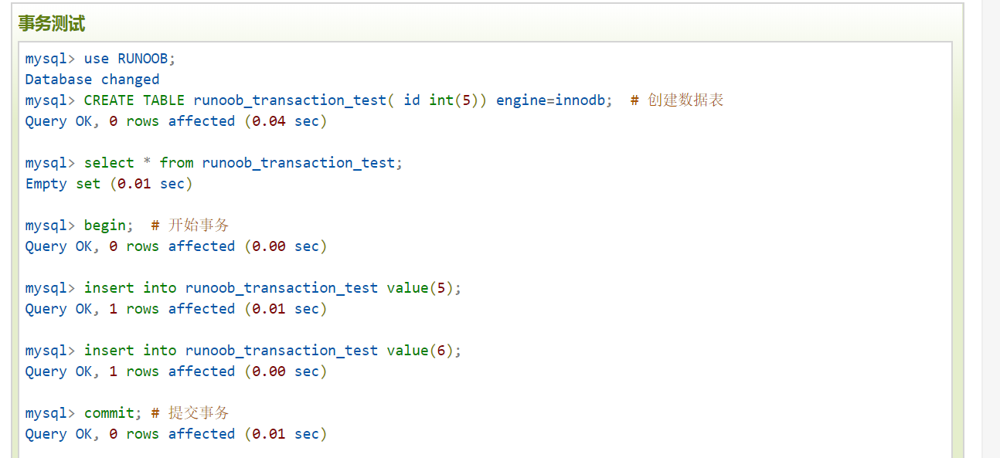
ALTER命令
当我们需要修改数据表名或者修改数据表字段时，就需要使用到MySQL ALTER命令。
ALTER TABLE：添加，修改，删除表的列，约束等表的定义。
- 查看列：desc 表名;
- 修改表名：alter table t_book rename to bbb;
- 添加列：alter table 表名 add column 列名 varchar(30);
- 删除列：alter table 表名 drop column 列名;
- 修改列名MySQL： alter table bbb change nnnnn hh int;
- 修改列属性：alter table t_book modify name varchar(22);
sp_rename：SQLServer 内置的存储过程，用与修改表的定义。
约束
MySQL 查看约束，添加约束，删除约束 添加列，修改列，删除列
- 查看表的字段信息：desc 表名;
- 查看表的所有信息：show create table 表名;
- 添加主键约束：alter table 表名 add constraint 主键 （形如：PK_表名） primary key 表名(主键字段);
- 添加外键约束：alter table 从表 add constraint 外键（形如：FK_从表_主表） foreign key 从表(外键字段) references 主表(主键字段);
- 删除主键约束：alter table 表名 drop primary key;
- 删除外键约束：alter table 表名 drop foreign key 外键（区分大小写）;
- 修改表名：alter table t_book rename to bbb;
- 添加列：alter table 表名 add column 列名 varchar(30);
- 删除列：alter table 表名 drop column 列名;
- 修改列名： alter table bbb change nnnnn hh int;
- 修改列属性：alter table t_book modify name varchar(22);
1 | mysql> desc book; |
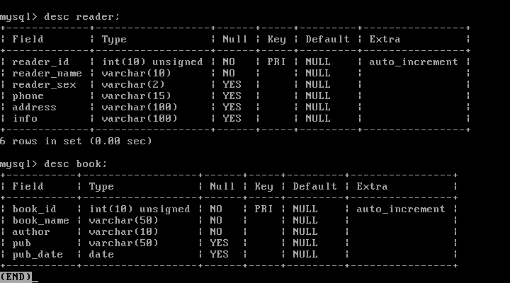
添加book_id列到reader表，并添加外键约束(book表中的book_id)1
2mysql> ALTER TABLE reader ADD book_id INT UNSIGNED;
mysql> desc reader;
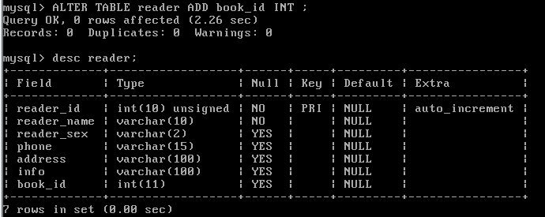1
2mysql> ALTER TABLE reader ADD CONSTRAINT fk_book_reader FOREIGN key
-> reader(book_id) REFERENCES book(book_id);
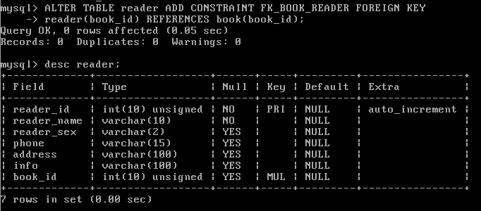
出现1215详情见另一篇文章[MySQL错误集]
索引
MySQL索引的建立对于MySQL的高效运行是很重要的，索引可以大大提高MySQL的检索速度。
打个比方，如果合理的设计且使用索引的MySQL是一辆兰博基尼的话，那么没有设计和使用索引的MySQL就是一个人力三轮车。
索引分单列索引和组合索引。单列索引，即一个索引只包含单个列，一个表可以有多个单列索引，但这不是组合索引。组合索引，即一个索引包含多个列。
创建索引时，你需要确保该索引是应用在 SQL 查询语句的条件(一般作为 WHERE 子句的条件)。
实际上，索引也是一张表，该表保存了主键与索引字段，并指向实体表的记录。
上面都在说使用索引的好处，但过多的使用索引将会造成滥用。因此索引也会有它的缺点：虽然索引大大提高了查询速度，同时却会降低更新表的速度，如对表进行INSERT、UPDATE和DELETE。因为更新表时，MySQL不仅要保存数据，还要保存一下索引文件。
建立索引会占用磁盘空间的索引文件。
显示索引
1 | mysql> SHOW INDEX FROM table_name\G |
普通索引
创建索引
这是最基本的索引，它没有任何限制。它有以下几种创建方式：1
CREATE INDEX indexName ON mytable(cname(length));
如果是CHAR，VARCHAR类型，length可以小于字段实际长度；如果是BLOB和TEXT类型，必须指定 length。
修改表结构(添加索引)
1 | ALTER table tableName ADD INDEX indexName(columnName) |
创建表的时候直接指定
1 | CREATE TABLE mytable( |
删除索引的语法
1 | DROP INDEX [indexName] ON mytable; |
为book表中book_name建立基本的索引1
mysql> CREATE INDEX INDEX_BOOKNAME ON book(book_name(50));
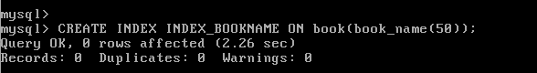
唯一索引
它与前面的普通索引类似，不同的就是：索引列的值必须唯一，但允许有空值。如果是组合索引，则列值的组合必须唯一。它有以下几种创建方式：
创建索引
1 | CREATE UNIQUE INDEX indexName ON mytable(username(length)) |
修改表结构
1 | ALTER table mytable ADD UNIQUE [indexName] (username(length)) |
创建表的时候直接指定
1 | CREATE TABLE mytable( |
使用ALTER 命令添加和删除索引
有四种方式来添加数据表的索引：
- ALTER TABLE tbl_name ADD PRIMARY KEY (column_list): 该语句添加一个主键，这意味着索引值必须是唯一的，且不能为NULL。
- ALTER TABLE tbl_name ADD UNIQUE index_name (column_list): 这条语句创建索引的值必须是唯一的（除了NULL外，NULL可能会出现多次）。
- ALTER TABLE tbl_name ADD INDEX index_name (column_list): 添加普通索引，索引值可出现多次。
- ALTER TABLE tbl_name ADD FULLTEXT index_name (column_list):该语句指定了索引为 FULLTEXT ，用于全文索引。
例子：1
mysql> ALTER TABLE reader ADD INDEX (reader_name);
你还可以在 ALTER 命令中使用 DROP 子句来删除索引。尝试以下实例删除索引:1
mysql> ALTER TABLE reader DROP INDEX (reader_name);
使用 ALTER 命令添加和删除主键
主键只能作用于一个列上，添加主键索引时，你需要确保该主键默认不为空（NOT NULL）。实例如下：1
2mysql> ALTER TABLE testalter_tbl MODIFY i INT NOT NULL;
mysql> ALTER TABLE testalter_tbl ADD PRIMARY KEY (i);
你也可以使用 ALTER 命令删除主键：1
mysql> ALTER TABLE testalter_tbl DROP PRIMARY KEY;
删除主键时只需指定PRIMARY KEY，但在删除索引时，你必须知道索引名。
临时表
MySQL 临时表在我们需要保存一些临时数据时是非常有用的。临时表只在当前连接可见，当关闭连接时，Mysql会自动删除表并释放所有空间。
临时表在MySQL 3.23版本中添加，如果你的MySQL版本低于 3.23版本就无法使用MySQL的临时表。不过现在一般很少有再使用这么低版本的MySQL数据库服务了。
MySQL临时表只在当前连接可见，如果你使用PHP脚本来创建MySQL临时表，那每当PHP脚本执行完成后，该临时表也会自动销毁。
如果你使用了其他MySQL客户端程序连接MySQL数据库服务器来创建临时表，那么只有在关闭客户端程序时才会销毁临时表，当然你也可以手动销毁。
语法和建表差不多，只不过 TABLE 关键字改成 TEMPORARY TABLE 即可。
删除和普通删除表语法没区别。
复制表
使用 SHOW CREATE TABLE 命令获取创建数据表(CREATE TABLE) 语句，该语句包含了原数据表的结构，索引等。1
mysql> SHOW CREATE TABLE book\G
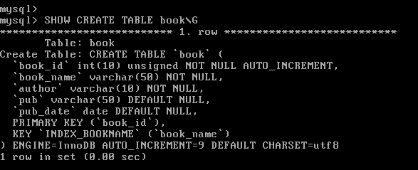
复制表的内容，你就可以使用 INSERT INTO … SELECT 语句来实现
案例
note:
来给大家区分下mysql复制表的两种方式。
第一、只复制表结构到新表
create table 新表 select from 旧表 where 1=2
或者
create table 新表 like 旧表
第二、复制表结构及数据到新表
create table新表 select from 旧表
序列使用
MySQL 序列是一组整数：1, 2, 3, …，由于一张数据表只能有一个字段自增主键， 如果你想实现其他字段也实现自动增加，就可以使用MySQL序列来实现。
前面也有用到过的 AUTO_INCREMENT 来定义列既可以实现序列
重置序列
如果你删除了数据表中的多条记录，并希望对剩下数据的AUTO_INCREMENT列进行重新排列，那么你可以通过删除自增的列，然后重新添加来实现。 不过该操作要非常小心，如果在删除的同时又有新记录添加，有可能会出现数据混乱。操作如下所示：1
2
3
4mysql> ALTER TABLE insect DROP id;
mysql> ALTER TABLE insect
-> ADD id INT UNSIGNED NOT NULL AUTO_INCREMENT FIRST,
-> ADD PRIMARY KEY (id);
序列的开始值
创建表时
1 | mysql> CREATE TABLE insect |
ALTER修改
1 | mysql> ALTER TABLE t AUTO_INCREMENT = 100; |
处理重复数据
防止表中出现重复数据
你可以在MySQL数据表中设置指定的字段为 PRIMARY KEY（主键） 或者 UNIQUE（唯一） 索引来保证数据的唯一性。
统计重复数据
以下我们将统计表中 first_name 和 last_name的重复记录数：1
2
3
4mysql> SELECT COUNT(*) as repetitions, last_name, first_name
-> FROM person_tbl
-> GROUP BY last_name, first_name
-> HAVING repetitions > 1;
以上查询语句将返回 person_tbl 表中重复的记录数。 一般情况下，查询重复的值，请执行以下操作：
- 确定哪一列包含的值可能会重复。
- 在列选择列表使用COUNT(*)列出的那些列。
- 在GROUP BY子句中列出的列。
- HAVING子句设置重复数大于1。
过滤重复数据
如果你需要读取不重复的数据可以在 SELECT 语句中使用 DISTINCT 关键字来过滤重复数据。
你也可以使用 GROUP BY 来读取数据表中不重复的数据：
导出数据
导出 SQL 格式的数据
1 | $ mysqldump -u root -p (dbName) (tableName) > dump.txt |
表名可不加，不加则导出整个数据库
实例:1
$ mysqldump -u root -p booklib > /tmp/booklib.txt
导入数据
source命令导入
先登录进数据库1
2
3
4mysql> create database booklib; # 创建数据库
mysql> use booklib; # 使用已创建的数据库
mysql> set names utf8; # 设置编码
mysql> source /tmp/booklib.sql # 导入备份数据库